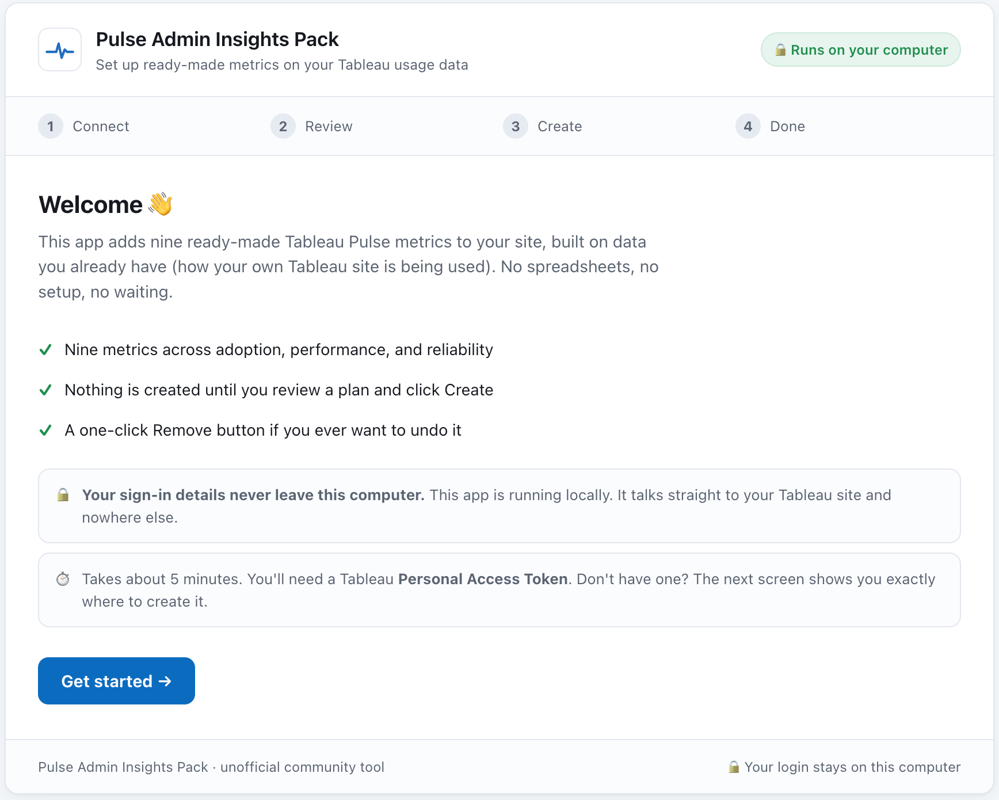
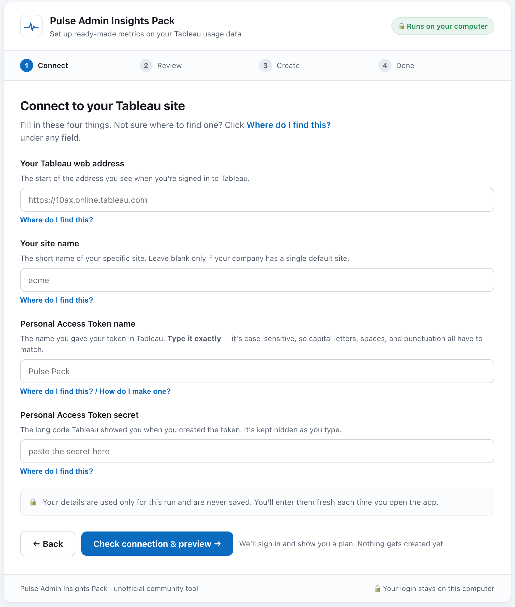

If you've used Tableau, you probably know about Dashboard Accelerators. Prebuilt dashboards for common scenarios that you drop onto your data and get something useful right away. A curated starting point instead of starting from scratch.
I built the equivalent for Tableau Pulse. It's called the Pulse Admin Insights Starter Pack: a set of prebuilt Pulse metrics you install onto data every Tableau Cloud site already has, so you go from nothing to a working set of tracked metrics in a few minutes. Same idea as an accelerator, aimed at Pulse.

Why Pulse needs one
Quick refresher, because the reason this helps is baked into how Pulse works. Most analytics is pull. You have a question, you go find a dashboard, you read it. Pulse is push. You pick the metrics you care about, you follow them, and Pulse comes to you with what changed and why, in plain language.
That shift is the whole point of Pulse, and it's also where people stall. Instead of opening a dashboard someone already built, you have to decide what to measure. "What should we measure" is a blank page, and blank pages are where good intentions sit until next quarter.
The on-ramp
An accelerator solves the blank-page problem by handing you a curated start. The starter pack does that for Pulse.
Here's the part that makes it work on any site with no setup. Every Tableau Cloud site ships with Admin Insights, your own site's usage data: who's logging in, what they're viewing, how your extracts and views are holding up. You didn't build it and you don't maintain it. It's just there, with the same schema on every Cloud site. Because the schema is standardized, one pack of metrics built against it runs anywhere without touching the data.
The starter pack is nine prebuilt Pulse metrics across three groups: adoption, performance, and reliability. And because it's built on your usage data, the first thing you see in Pulse is your own environment, not a toy example. That matters.
The first impression of Pulse is a number that's actually about you.
Most people should use the local web app, so start there. Double-click a launcher, it opens in your browser, you fill in four fields, and you click through three steps: Connect, Review, Create. If you live in a terminal, there's a command line that does the same thing.

Made careful on purpose
This utility creates metrics on your live Tableau Cloud site, so I kept it simple. It only ever creates net-new metrics and never edits or deletes anything it didn't create. It previews before it writes, so you see exactly what's about to happen, and there's a one-click Remove that undoes exactly what it added. The local app runs on your own machine and stores no credentials.
Try it
I built this because the mindset shift that makes Pulse good is the same thing that makes it hard to start. A running start fixes that.
To be clear, it's an unofficial community tool. It is not built or supported by Tableau or Salesforce.
It's on GitHub: tableau-pulse-admin-insights-pack.
One honest limit for now: English field names only, and the metrics that need calculated expressions, like slow-load counts and success rates, aren't in this version yet. Threshold and ratio metrics are next.
If you try it, tell me where it breaks.